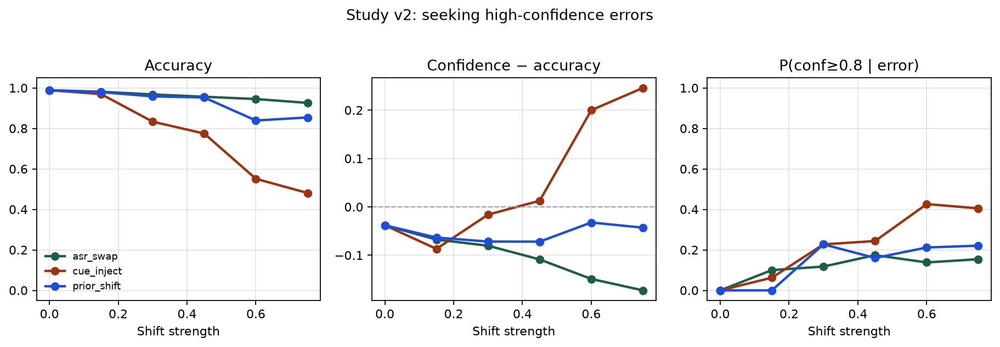
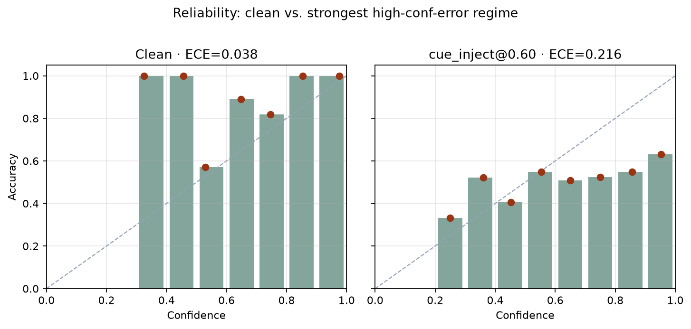

Study v2 complete
Producing high-confidence errors
Follow-up to the pilot. Token dropout made the model underconfident. This pass asks which label-preserving shifts create the opposite pathology: high-confidence wrong answers.
Setup
| Regime | Mechanism |
|---|---|
asr_swap | Keyword → near-neighbor confusions (ASR/homophone proxy) |
cue_inject | Strip true cues; splice competing-intent keywords; label unchanged |
prior_shift | Skew test prior + mild cue injection |
python research/code/study_high_confidence_errors.py
Headline
Competing-intent cue injection produces overconfidence — the pattern the pilot missed.

cue_inject at level 0.6 (528 test examples):
| Metric | Value |
|---|---|
| Accuracy | 0.551 |
| Mean confidence | 0.751 |
| Confidence − accuracy | +0.200 |
| ECE | 0.216 |
| P(conf ≥ 0.8 | error) | 0.426 (237 errors) |

What each regime did
- asr_swap — mostly underconfident; weak path to high-conf errors on this model.
- cue_inject — gap flips positive; ~43% of mistakes still look sure.
- prior_shift — does not systematically create overconfidence.
Operational probe
AUC 0.72 predicting large confidence/correctness mismatch from length, corruption proxy, regime, and level — confidence excluded. Useful early-warning signal, not a solved detector.
Limits
- Synthetic text, not real ASR or production logs.
- Cue injection is a strong artificial mechanism — proves the measurement loop, not the exact production cause.
- Operational AUC is only moderate.
Analysis report + CSVs · Investigation hub · Pilot · Fuller plan